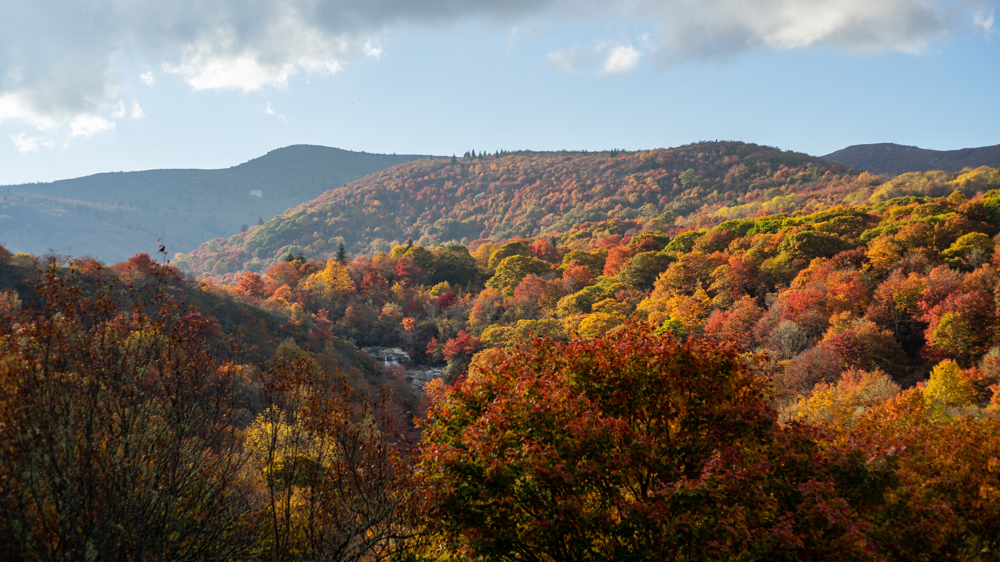

Capital. Capacity.
Collaboration.
ACC works across capital, capacity, and collaboration to strengthen locally rooted institutions and expand economic opportunity across Appalachia.
How ACC Delivers Impact
Our integrated approach combines financial resources, technical infrastructure, and multi-sector partnerships.
Expand Access to Capital
ACC brings new sources and types of capital into the region and creates pathways for community lenders to put those resources to work.
Our approach includes wholesale lending, loan participations, Community Investment Notes, and financing partnerships with commercial banks, philanthropic foundations, and impact investors. We develop new capital strategies in areas of emerging opportunity, including clean energy finance and employee ownership.
- Wholesale loans and loan participations
- $40M Community Investment Notes offering
- Blended finance & catalytic private capital
Strengthen Community Lenders
Strong local institutions are essential to strong local economies. ACC helps members build internal capacity, share knowledge, and work together more effectively.
We provide tailored technical assistance, peer learning circles, executive leadership development, shared operational services, and data analytics that empower members to evaluate underwriting opportunities and deploy capital faster.
- Technical assistance & leadership cohorts
- Peer learning & executive roundtables
- ACC Data Analytics Hub pipeline intelligence
Build Solutions Together
Complex challenges require institutions to work across organizations, sectors, and geographies. ACC convenes partners to develop and test scalable approaches.
Initiatives like Opportunity Appalachia and the Green Bank for Rural America demonstrate how ACC leverages the strength of its regional network and national partnerships to move high-impact projects forward and respond to emerging regional needs.
- Opportunity Appalachia project pipeline
- Green Bank clean energy and resilient financing
- Disaster recovery & Helene business response
How ACC Moves Capital to Communities
Our capital delivery system ensures investment flows efficiently from national markets directly into Appalachian Main Streets.
Capital Providers
Banks, impact investors, federal partners, and philanthropic foundations seeking verified impact.

ACC Platform
Aggregates demand, structures blended finance, mitigates credit risk, and provides wholesale capital.

Community Lenders
46 member CDFIs with deep on-the-ground relationships, localized underwriting, and technical support.

Businesses & Projects
Rural small businesses, downtown revitalizations, manufacturing, clean energy, and civic infrastructure.

Economic Opportunity
Sustainable jobs, local wealth accumulation, diversified tax bases, and resilient Appalachian communities.
Programs & Strategic Initiatives
Transformative initiatives designed to channel targeted capital, accelerate community revitalization, and enhance resilience.
 Economic Development
Economic Development
Opportunity Appalachia
Moving community projects from vision to investment. Provides technical assistance, financial structuring, and investor matchmaking to bring high-impact real estate and downtown revitalization projects to fruition.
• $165M raised since 2020
• 86 projects supported seeking $700M in financing
• 4,700 quality jobs projected (2,000 active)
 Climate & Clean Energy
Climate & Clean Energy
Green Bank for Rural America
Accelerating investment in rural enterprises, community projects, and energy-resilient infrastructure. Supports low- and zero-emission products, commercial solar, energy efficiency, and transition projects across energy communities.
• $67M approved for community lenders
• Includes dedicated Hurricane Helene energy resilience & recovery support

Recovery & ResilienceWestern NC Small Business Initiative
Supporting businesses and jobs through Hurricane Helene recovery and long-term resilience. Rapidly mobilized emergency grants and bridge capital to safeguard Main Street merchants, artisans, and manufacturers.
• 31 Appalachian counties covered
• 2,100+ small businesses directly assisted
• 8,000+ local jobs sustained
Data & Technology
ACC Data Analytics Hub
Helping CDFIs deploy capital faster and smarter through shared data, borrower engagement, and market analytics. Democratizes institutional-grade business intelligence for rural lenders.
• 4,800 businesses connected across the region
• 1,000+ warm lending leads generated for local underwriters
 Capacity & Leadership
Capacity & Leadership
Rural Investment Collaborative & CIT
Building leadership and institutional capacity in community economic development through the Community Investment Training (CIT) series. Equips rural practitioners with project finance and development tools.
• $690K raised for technical assistance and pre-development implementation